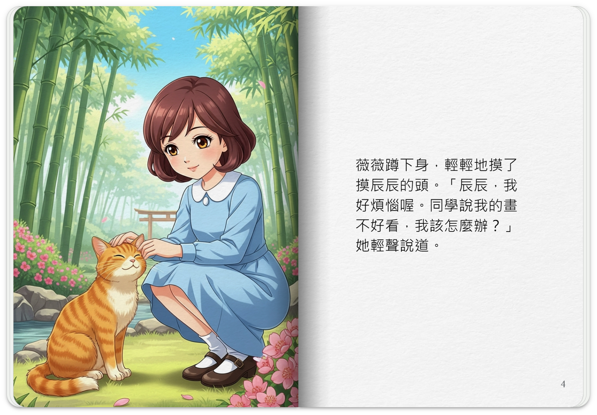
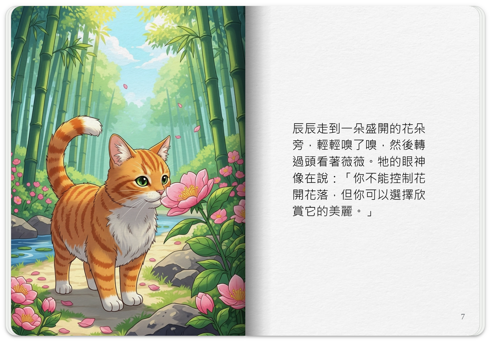

別人說什麼，你有決定權嗎？沒有。聽著自己喜不喜歡、你有決定權嗎？現在大家應該可以說我有一定程度的決定權、我沒有100%的決定權吧，因為我很多習慣很多慣性，但是我如果瞭解了我心，更冷靜地知道我可以轉變我的想法的話，你的決定、你的做主的能力就越來越強。所以首先我們要知道什麼能掌握什麼不能，別人跟你說什麼、別人對你做什麼，你很多時候是沒辦法掌握的。不能掌握的，你就要接受。「接受不是認同」，接受不是被動接受、不是無能為力的接受，事實你不能改變，你要解釋你能掌握的，你就去掌握什麼是你能掌握的我的意識，如果能夠用善分別，我也許可以影響別人，我影響這個不喜歡的人，我用我的慈悲、關懷、同理心去想到他可能在面臨什麼樣的困難，所以他會現在情緒不好，態度不好，我如果用這種慈悲、關懷、同理心善分別去跟他互動，也許我會把他轉變過來。他會變成我的好朋友、我們可以彼此互相幫忙，我不但可以轉變自己的命運，我也可以轉變別人的命運，所以什麼能掌握、什麼不能掌握？在能與不能之間這就是做人的藝術。所以瞭解這個「知」與「識」的差別，以及你什麼能掌握、什麼不能掌握，去改變你能掌握的，這就是智慧之門。就是通往智慧之路，那你瞭解這個道理，你碰到事情、碰到情形，你能夠去運用出來，這就是生命的覺悟之門。